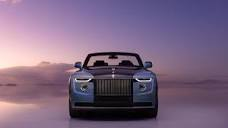
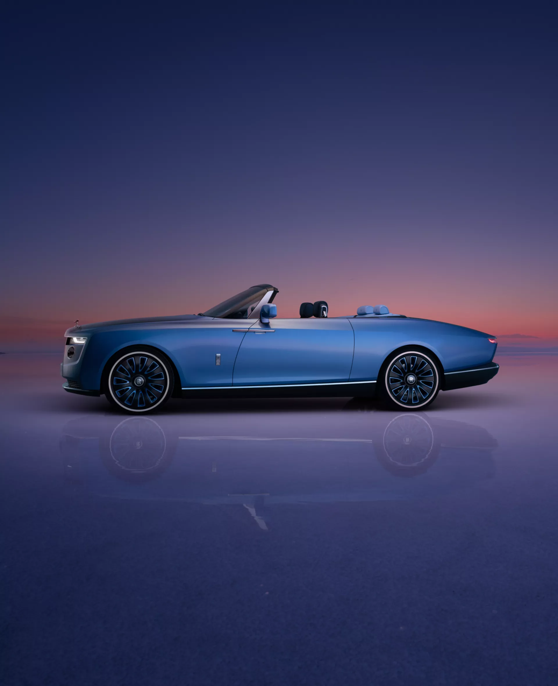

Overview
Handan-built by expert Coachbuild artisans, this masterful creation is a tribute to the owner’s father, whose
origins in the pearling industry grew into a family business. Rarer than a natural pearl, it is truly one-of-a-kind. Mufacturer Rolls-Royce Motor Cars
Production 2 of 3, launch and presented on 27 May 2021[1][2]
Model years 2021, 2022
Assembly Goodwood Plant, West Sussex, England
Designer Daniel Königs
Body and chassis
Class Coach build
Body style Cabriolet
Layout FR Layout
Platform Wraith
Doors Suicide doors
Related Rolls-Royce Phantom (eighth generation)
Powertrain
Engine 6.75 BMW N74 Twin-Turbo V1
price
US$28 million.[3][4][5]
2022 Copyright©Rashy Automobile
Back To Top